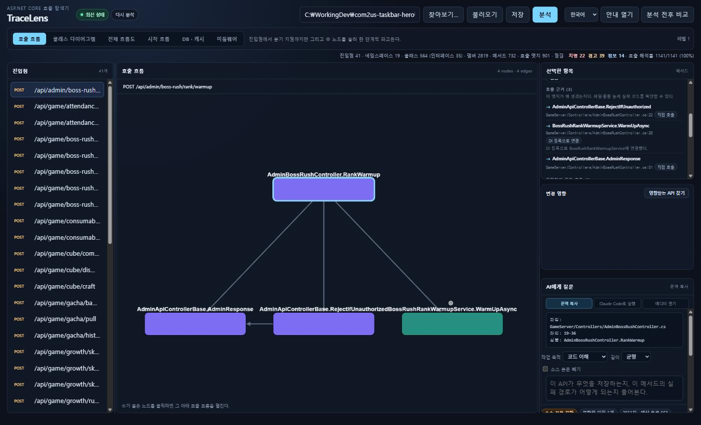
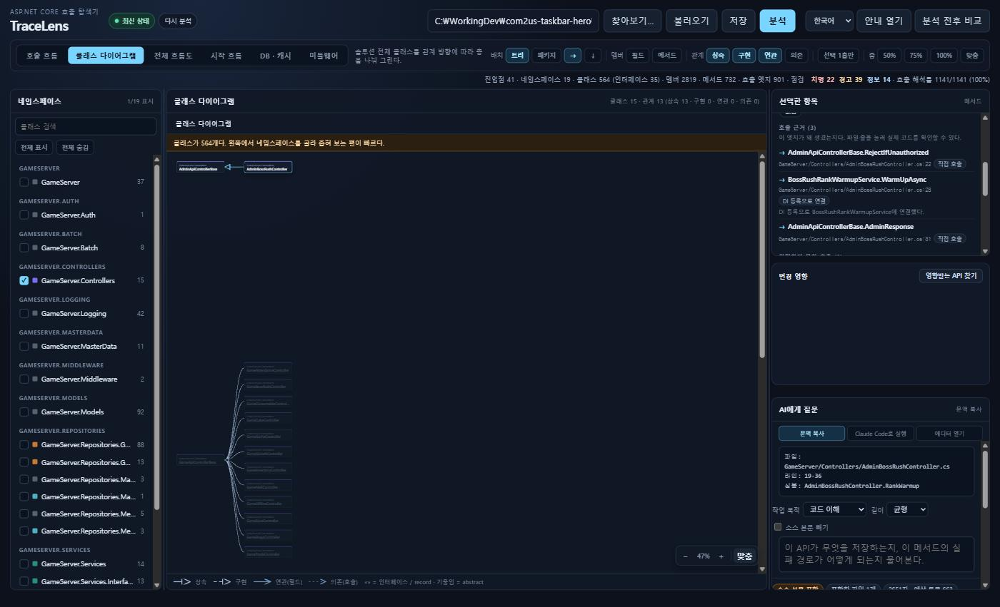
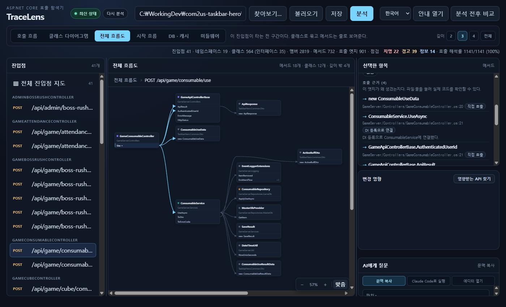
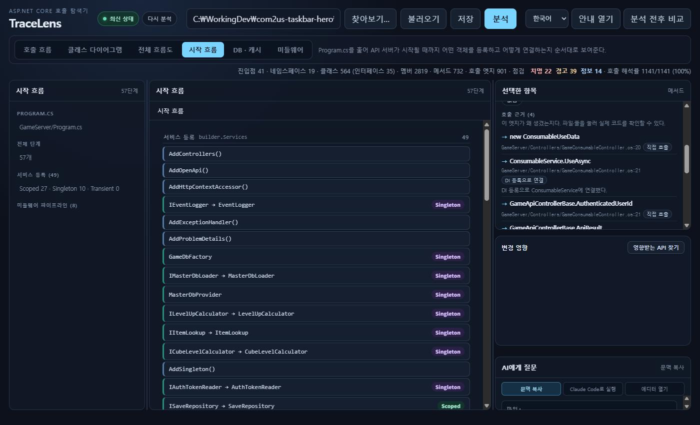
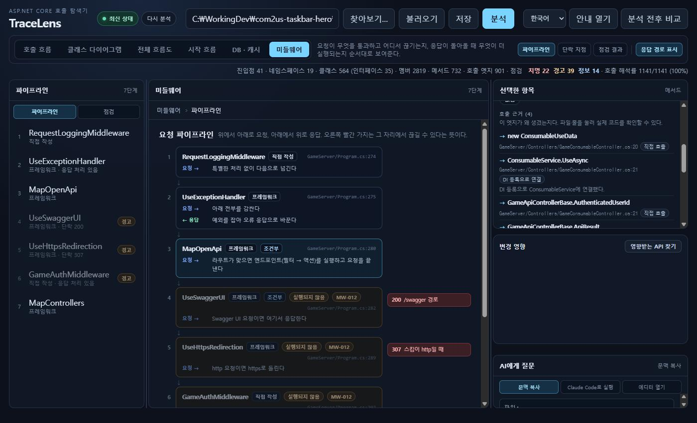

개요
TraceLens는 ASP.NET Core Web API의 호출 경로와 코드 근거를 확인하고, AI 코딩 에이전트에 필요한 문맥을 전달하는 로컬 개발 도구다. HTTP 엔드포인트(진입점)부터 컨트롤러 → 서비스 → 리포지토리로 이어지는 메서드 호출 흐름을 그래프로 보여주고, 코드베이스 전체 모양은 클래스 다이어그램·전체 흐름도로 본다. 어느 보기에서든 박스나 멤버 줄을 클릭하면 그 위치의 실제 소스가 옆에 뜨고, 그 선택으로 근거가 붙은 작업 문맥을 만들어 쓰는 AI 도구에 그대로 넘길 수 있다.
localhost에서만 동작한다. 원격에서
접근하게 만들거나 인증 없이 외부 바인딩을 허용하는 설정은 없다. 이 도구는 개발자 개인 머신에서
분석 대상 솔루션을 여는 용도로만 쓴다.
여섯 가지 보기 한눈에
진입점 하나를 단계식으로
라우트 하나를 골라 분기 지점까지 그리고, ⊕ 노드를 눌러 한 단계씩 파고든다.
솔루션 전체를 UML로
모든 타입을 상속·구현·연관·의존 관계로 한 캔버스에 그린다.
진입점 지도 → 전 구간 흐름
모든 라우트를 지도로 보고, 하나를 골라 메서드 단위 전 구간으로 들어간다.
Program.cs 순서 그대로
DI 등록과 미들웨어 파이프라인을 소스 순서대로 타임라인으로 보여준다.
보상 처리 점검
트랜잭션 없이 쓰는 경로에서 실패하면 무엇이 되돌려지지 않는지 격자로 본다.
요청/응답 구간과 단락
요청이 무엇을 통과하고 어디서 끊기는지, 끊긴 뒤 무엇이 더 실행되는지 본다.
빌드와 실행
평소 도구를 쓸 때(정식 사용)와 TraceLens 자체를 고칠 때(개발) 실행 방식이 다르다. 이 둘은
run.ps1 하나로 처리한다. 소스 트리 없이 빌드 결과물만 옮겨 실행하고 싶다면
dotnet publish를 따로 쓴다.
요구사항
- .NET 8 이상 SDK
- Node.js 20 이상
- Claude Code CLI — 질문 패널의 Claude Code로 실행 버튼을 쓸 경우에만 필요하다(이 버튼만 Claude Code 전용이다). 문맥 복사는 없어도 된다.
- Codex CLI · VS Code — 위 버튼과는 별개로, TraceLens MCP를 직접 등록해서 쓰고 싶을 때 필요하다(Claude Code로 실행 절의 연결 방법 참고)
정식으로 쓸 때 — 명령 하나
클라이언트를 프로덕션 빌드해서 서버 하나로 UI와 API를 함께 서빙한다. 평소 도구를 쓸 때 쓰는 방법이다.
git clone <repo-url> tracelens
cd tracelens
.\run.ps1
클라이언트 의존성 설치 → 서버 빌드 → 클라이언트 프로덕션 빌드까지 순서대로 끝내고 서버를 띄운다.
빌드 결과는 src/TraceLens.Server/wwwroot로 들어가므로 브라우저에서
http://127.0.0.1:25011 하나만 열면 된다(준비되면 자동으로 열린다). 종료는
Ctrl+C.
배포물로 실행하기 · 명령줄(CLI)
저장소 루트에서 .\pack.ps1을 실행하면 artifacts/에
Windows x64 portable ZIP과 .NET tool 패키지가 생긴다. 함께 만들어지는
manifest.txt에는 산출물의 SHA256 체크섬·버전과 수동 검증 절차가 들어 있다.
이 스크립트는 만들기만 하고 게시(nuget push 등)는 하지 않는다.
배포물에는 웹 빌드 결과(wwwroot)와 예제(samples)가 함께 들어간다.
어느 폴더에서 실행해도 UI가 열리고, TraceLens 소스와 Node.js가 없어도 동작한다.
다만 분석 대상을 여는 데는 .NET SDK가 필요하다 — 도구 실행 환경과 분석 대상 빌드 환경은 다르다.
| 명령 | 하는 일 |
|---|---|
tracelens doctor [--target <경로>] [--json] |
SDK·대상 형식·저장 권한·포트·MCP 호스트·선택적 CLI를 점검하고 다음 행동을 알려 준다. 설치나 설정 변경은 하지 않고, API 키나 전체 환경 변수도 수집하지 않는다. |
tracelens analyze <경로> [--json] |
한 번 분석하고 요약(진입점·노드·엣지·해석률·한계)을 출력한다. |
tracelens serve [--target <경로>] [--port n] |
UI 서버를 띄운다. 루프백에만 바인딩한다. |
tracelens mcp --graph <graph.json> |
로컬 stdio MCP 서버를 띄운다. |
tracelens demo [--dir <위치>] |
예제를 원하는 폴더로 복사하고 학습 순서를 안내한다. |
.sln과 .csproj다.
.slnx는 지금 쓰는 MSBuildWorkspace가 열지 못해 아직 지원하지 않으며,
doctor가 UNSUPPORTED_TARGET_FORMAT으로 그 이유를 알려 준다.
확장자 검사만 푸는 방식으로 "지원"을 늘리지 않는다.
- EF Core · MongoDB · NHibernate 저장소 접근 → DB·캐시 접근 0건 +
dataAccess.notes에 사유 - MediatR
Send()→핸들러, 델리게이트·이벤트 디스패치 → 호출 엣지 없음 - gRPC · SignalR ·
BackgroundService· 메시지 컨슈머 · Hangfire/Quartz · Azure Functions → 진입점으로 세지 않음 - MVC 액션·예외 필터,
[Authorize]정책 → 미들웨어 단계로 나오지 않음 - 전통적 라우팅(
MapControllerRoute) → 후보 그룹ConventionalRouting으로만 센다
Startup.cs(.NET Core 3.1~5)는 읽는다 — Program.cs와 한 타임라인으로 합친다.
소스 없이 빌드 결과만 배포·실행할 때
run.ps1과 dotnet run은 실행할 때마다 소스 트리와 .NET SDK가 있어야 한다.
빌드 결과물만 다른 폴더나 다른 PC로 옮겨서 그대로 실행하고 싶다면(소스를 공유하지 않는 팀원 PC,
배포용 폴더 등) dotnet publish로 독립 실행 가능한 폴더를 만든다.
# 1. 프론트엔드를 먼저 프로덕션 빌드한다 (결과가 wwwroot로 들어가야 publish에 포함된다)
cd client
npm install
npm run build
cd ..
# 2. 서버를 publish 폴더로 게시한다
dotnet publish src/TraceLens.Server -c Release -o publish
결과는 -o로 지정한 폴더(위 예시는 저장소 루트의 publish/)에 통째로
떨어진다. TraceLens.Server.exe(Windows) / TraceLens.Server.dll, 참조
프로젝트(TraceLens.Analyzer · TraceLens.Mcp)까지 포함한 종속 파일, 그리고 방금 빌드한 React
결과물이 든 wwwroot/가 함께 들어간다 — 소스 코드나 Node.js 없이 이 폴더
하나만으로 동작한다. 다만 기본 게시는 self-contained가 아니라 프레임워크 종속 방식이라, 실행할
PC에 .NET 8 런타임은 설치되어 있어야 한다.
# 3. 실행 (Windows)
.\publish\TraceLens.Server.exe
# 또는 dll을 dotnet으로 직접 실행
dotnet .\publish\TraceLens.Server.dll
기본 포트는 25011이고 항상 127.0.0.1에만 바인딩한다(설계 제약 4).
이미 쓰이고 있으면 --port <번호>로 바꾼다 —
게시본은 dotnet .\publish\TraceLens.Server.dll --port 25099,
배포물은 tracelens serve --port 25099, 소스는 .\run.ps1 -Port 25099다.
종료는 Ctrl+C 또는 콘솔 창 닫기이고,
백그라운드로 띄웠다면 Get-Process tracelens | Stop-Process로 끝낸다.
MCP 연동(Claude Code로 실행, docs/mcp-setup_kr.md)에서
TraceLens.Mcp.dll 경로를 등록해 썼다면, 게시 폴더의 경로로 다시 등록해야 한다 —
게시 전에는 보통 bin/Debug/net8.0/TraceLens.Mcp.dll을 가리키고 있었을 것이다.
TraceLens.Mcp도 같은 방식으로 게시하려면 dotnet publish src/TraceLens.Mcp -c Release -o publish-mcp를
따로 실행한다.
개발할 때 — 프론트엔드를 고치면서 확인
API 서버(25011)와 Vite 개발 서버(25012)를 함께 띄운다. 클라이언트 코드를 고치면서 HMR(Hot Module Replacement)로 즉시 확인할 때 쓴다.
.\run.ps1 -Dev
브라우저는 http://localhost:25012로 열리고, 이 개발 서버가 /api 요청을
백그라운드의 API 서버(25011)로 프록시한다. Ctrl+C로
종료하면 백그라운드 API 서버까지 함께 정리된다.
그 밖의 옵션
| 옵션 | 동작 |
|---|---|
-SkipBuild | 빌드를 건너뛰고 이미 빌드된 결과로 바로 실행한다. 코드를 안 건드리고 재기동만 할 때. |
-NoBrowser | 브라우저를 자동으로 열지 않는다. |
-Dev -SkipBuild | 이미 dotnet build를 해 둔 상태에서 개발 서버만 다시 띄운다. |
스크립트 없이 직접 실행
백엔드와 프론트엔드를 따로따로 다룰 때(예: 서버만 디버거로 붙여서 실행할 때) 쓴다.
# 백엔드
dotnet build
dotnet run --project src/TraceLens.Server
# 프론트엔드 (다른 터미널에서)
cd client
npm install
npm run devdotnet build TraceLens.sln으로 빌드해 둬야 한다. run.ps1이 이미 이 과정을
포함하므로 보통은 신경 쓸 필요가 없다.
첫 화면과 안내
분석하기 전 화면은 빈 캔버스가 아니라 무엇부터 해 볼지를 보여 준다. 예제로 먼저 살펴보기 · 내 프로젝트 분석하기 · 지금 지원하는 범위 · 실무 절차(레시피) 네 부분이다.
- 예제 —
samples/OrderApi는 컨트롤러 4개 라우트와 Minimal API 4개 라우트가 같은 서비스·저장소를 부르고, 트랜잭션 없이 4단계를 쓰는 경로가 들어 있다. 터미널에서tracelens demo로 원하는 폴더에 복사한 뒤 직접 분석한다. - 환경 점검 — "환경 점검 보기"를 누르면
doctor와 같은 결과를 화면에서 본다. - 첫 사용 안내 — 헤더의 "안내 열기"를 누르면 다섯 단계(대상 고르기 → 분석 → 진입점 선택 → 소스 근거 확인 → 문맥 복사)를 보여 준다. 진행은 실제 완료 이벤트로만 올라가고, 언제든 닫고 다시 열 수 있다.
- 언어 — 헤더 오른쪽에서 한국어·English를 고른다. 브라우저 언어를 기본값으로 참고하고 선택은 저장된다. 심볼·라우트·코드·파일 경로는 번역하지 않는다.
화면 구성
상단 바 → 보기 전환 탭 → 분석 요약 줄 → 3분할 워크스페이스 순서로 구성된다. 어느 보기로 바꿔도 이 틀은 그대로 유지된다.
상단 바
- 경로 입력란 — 분석할
.sln또는.csproj절대 경로를 직접 입력한다. - 찾아보기… — 서버가 로컬 디렉터리를 훑어주는 폴더 선택 대화상자를 연다(아래 참고).
- 불러오기 — 전에 저장해 둔 분석 결과 JSON 파일을 골라 그대로 불러온다. 다시 분석하지 않는다.
- 저장 — 지금 분석 결과를 파일로 내려받는다(저장 · 불러오기 참고).
- 분석 — 입력한 경로를 Roslyn으로 분석해서 그래프를 새로 만든다.
- 신선도 배지 — 마지막 분석 시점과 현재 코드가 같은지 보여준다(신선도 · 재분석 참고).
분석 요약 줄
탭 바로 아래에 진입점·네임스페이스·클래스(인터페이스 수 포함)·멤버·메서드·호출 엣지 개수와 그래프 파일 크기·분석 소요 시간이 한 줄로 뜬다. 점검(치명·경고·정보) 항목이 있으면 색이 있는 숫자로 함께 표시된다.
3분할 워크스페이스
왼쪽은 보기에 따라 바뀌는 목록(진입점 · 네임스페이스 · 데이터소스 등), 가운데는 그래프/다이어그램 캔버스, 오른쪽은 선택한 항목의 상세·변경 영향·AI에게 질문 패널이다. 패널 사이 경계선은 드래그해서 폭을 바꾸고, 더블클릭하면 기본값으로 돌아온다. 창을 키우면 가운데 캔버스가 그만큼 넓게 쓰인다.
클릭하면 오른쪽 상세 패널이 갱신된다.
분석 대상 지정과 설정
솔루션(.sln)과 프로젝트(.csproj) 모두 분석 대상으로 지정할 수 있다.
- 솔루션(.sln)을 고르면 솔루션에 포함된 모든 프로젝트를 분석한다.
- 프로젝트(.csproj)를 고르면 그 프로젝트와 그 프로젝트가 참조하는 프로젝트만 분석한다. 큰 솔루션에서 관심 있는 서비스 하나만 빠르게 볼 때 유용하다.
찾아보기… 버튼은 브라우저의 파일 선택창 대신 서버가 로컬 디렉터리를 훑어 보여주는
전용 대화상자를 연다(브라우저 파일 선택창은 절대 경로를 알려주지 않기 때문이다). 폴더를 눌러
들어가고, .sln/.csproj 파일을 눌러 고른 뒤 선택을 누르거나
더블클릭한다. ↑ 상위로 되돌아가고, Esc로 닫는다.
tracelens.config.json
분석 대상 솔루션 루트(.sln이 있는 폴더)에 tracelens.config.json을 두면
분석 방식을 조정할 수 있다. 파일이 없으면 아래 기본값 그대로 동작하므로, 특별히 손볼 게 없다면
굳이 만들 필요는 없다.
직접 만들기 어렵다면 tracelens init --target <경로>가 $schema가 붙은 기본 파일을 만든다.
이미 파일이 있으면 덮어쓰지 않고 모르는 키와 기본값과 다른 키만 알려 준다.
지금 실제로 적용되는 값 전체는 tracelens config --show로 확인한다 —
"내 설정이 먹었는지"를 짐작하지 않아도 된다.
빈 배열은 기본값이 아니라 "없음"이다. 기본값을 쓰려면 그 키를 아예 적지 않는다.
| 필드 | 기본값 | 설명 |
|---|---|---|
entryPointAttributes | HttpGet · HttpPost · HttpPut · HttpDelete · HttpPatch | 이 특성이 붙은 메서드를 HTTP 진입점으로 본다. |
kindRules | Controller · Repository · Validator · Infra · Service · Db 6종 | 클래스 이름 접미사·베이스 타입으로 클래스 종류를 판정하는 규칙. |
maxCallDepth | 8 | 호출 그래프를 따라가는 최대 깊이. |
excludeNamespacePrefixes | System · Microsoft · Swashbuckle | 이 접두사로 시작하는 네임스페이스는 분석에서 뺀다. |
analysisScope | "Solution" | "Solution"(전체) 또는 "EntryPoints"(진입점에서 도달 가능한 것만). |
includeObjectCreation | true | new X()도 호출 그래프에 포함할지. |
includeMembers | true | 클래스 다이어그램용 필드·메서드 멤버 수집 여부. |
includeInterfaces | true | 인터페이스 선언을 클래스 목록에 포함할지. |
includeStartupFlow | true | "시작 흐름" 보기 수집 여부. |
includeDataAccess | true | "DB · 캐시" 보기 수집 여부. |
includeMiddleware | true | "미들웨어" 보기 수집 여부. |
includeCallSites | true | 호출 근거(callSites) 저장 여부. 끄면 파일이 작아지는 대신 상세 패널의 "호출 근거"·"확정하지 못한 호출" 절이 비게 된다. |
maxCallSitesPerEdge | 3 | 같은 엣지 하나에 남길 호출 근거 수 상한. 반복문 안 호출로 파일이 커지는 것을 막는다. |
maxBoundaryCallSites | 300 | 확정하지 못한 호출(경계) 목록의 상한. |
db | 아래 참고 | 사내 DB·캐시 계층의 모양을 알려주는 설정. 비워 둬도 SQL 리터럴과 타입 이름에서 짐작해서 동작한다. |
모르는 키가 있으면 경고로 알리고 무시한다(분석을 멈추지 않는다). 값의 형식이 틀려도
같은 방식으로 경고하고 기본값을 쓴다. 이 경고는 분석 결과의 한계 목록에도 들어가서 화면에서
확인할 수 있다. _comment와 $schema는 주석용으로 허용한다 —
JSON에는 주석이 없기 때문이다.
db 섹션 — 샤딩·Redis·보상 처리 설정
사내 DB 계층(자체 커넥션 팩토리, 샤딩, Redis 래퍼 등)의 이름 규칙을 알려주면 "DB · 캐시" 보기의
정확도가 올라간다. 패턴 문자열은 전체 이름에 * 와일드카드만 지원한다(대소문자 무시).
| 필드 | 설명 |
|---|---|
queryApis | SQL을 실행하는 API 패턴. 기본값에 Dapper 계열이 포함되어 있다. |
cacheApis | 캐시 클라이언트 API 패턴(Redis 등). |
connectionFactories | 커넥션을 여는 메서드 패턴. 첫 인자를 샤드 키로 본다. |
shardKeyParameters | 샤드 키로 쓰는 파라미터 이름(예: userNo). |
externalApis | 상태를 바꾸는 외부 호출 패턴(HTTP 클라이언트 등). 트랜잭션 안 외부 호출 판정에 쓴다. |
dataSources | 데이터소스 이름 → { kind, shardCount, readOnly, writeOnly, typePatterns }. kind는 shard · single · cache 중 하나. 샤드로 표시한 데이터소스가 하나라도 있으면 SHARD 규칙군이 켜진다. |
compensation.pairs | 이름 규칙(Insert↔Delete 등)으로 못 잡는 되돌리기 짝을 { "do": "...", "undo": "..." }로 직접 지정. |
compensation.irreversible | 취소 수단이 없는 호출 패턴(예: 발송 API). |
compensation.idempotent | 재실행해도 안전해서 되돌릴 필요가 없는 호출 패턴. |
queryBuilders | 쿼리 빌더의 모양. { root, queryType, terminals, joinMethods }로 적는다. 기본값은 SqlKata 한 종류(QueryFactory.Query("table")에서 시작해 GetAsync·InsertAsync 같은 종단 메서드로 실행하는 형태)다. |
transactionWrappers | 람다를 받아 그 안에서 트랜잭션을 여닫는 사내 래퍼 메서드 패턴. 적지 않아도 본문에 BeginTransaction*이 있고 델리게이트 파라미터를 부르는 메서드는 자동으로 찾는다. |
cacheWrappers | 솔루션 안에 선언됐지만 캐시 클라이언트로 봐야 하는 래퍼 패턴. 기본적으로 솔루션 안 메서드는 클라이언트로 보지 않는다 — 래퍼 안쪽을 봐야 만료 인자를 판단할 수 있고, 겉만 보고 "만료 없음"이라고 하면 오판이기 때문이다. |
쿼리 빌더는 어디까지 읽나
빌더로 만든 SQL은 리터럴이 없어서 테이블 이름을 본문에서 찾아야 한다. TraceLens는 종단 메서드에서
거꾸로 올라가 빌더의 시작점(Query("table"))을 찾고, 그 인자가 문자열 상수면
테이블 이름을 확실로, 변수·보간 문자열이면 ?와 추정으로 남긴다.
join 계열로 붙인 테이블도 같은 방법으로 읽는다.
읽지 못하는 것은 분명히 말한다: 빌더를 필드·프로퍼티에 담아 다른 메서드에서 실행하면 시작점을
찾지 못해 접근이 잡히지 않는다. db.queryBuilders에 맞는 항목이 없는 빌더 라이브러리도
마찬가지다. 이런 경우는 "접근이 없다"가 아니라 못 본 것이다 — 규칙 카탈로그와 한계 목록에서
확인한다.
{
"db": {
"shardKeyParameters": ["userNo", "friendNo", "targetNo"],
"dataSources": {
"GameDb": { "kind": "shard", "shardCount": 8, "typePatterns": ["*IShardConnectionFactory"] },
"GameDbReplica": { "kind": "single", "readOnly": true, "typePatterns": ["*ReplicaConnectionFactory"] },
"Redis": { "kind": "cache", "typePatterns": ["*IGameCache", "*RedisGameCache"] }
},
"compensation": {
"pairs": [{ "do": "InsertMemberAsync", "undo": "RemoveMemberAsync" }],
"irreversible": ["*PushClient.SendAsync"],
"idempotent": ["*IGameCache.RemoveAsync"]
}
}
}설정을 바꾼 뒤에는 반드시 다시 분석해야 반영된다.
신선도 · 재분석
TraceLens는 파일 저장을 감지해서 자동으로 재분석하지 않는다. 대신 마지막 분석 시점과 현재 코드가 같은지 항상 배지로 보여주고, 재분석은 사용자가 명시적으로 누른다.
배지는 30초마다 자동으로 상태를 다시 확인한다. 이 확인은 파일 목록·해시 비교일 뿐이고 재분석을 실행하지 않는다. 변경됨 상태에서는 몇 개 파일이 바뀌었는지 숫자가 붙고, 마우스를 올리면 바뀐 파일 목록(또는 마지막 분석 시각)이 툴팁으로 뜬다. 배지 옆 다시 분석 버튼을 누르면 그 자리에서 재분석하고, 보고 있던 보기·선택·필터는 그대로 유지된다 (사라진 노드·클래스만 선택에서 정리된다).
| 상태 | 뜻 |
|---|---|
| 최신 상태(fresh) | 기록한 입력과 지금 파일이 모두 같다. |
| 변경됨(stale) | 바뀐·지워진 파일, 새로 생긴 .cs, 또는 설정 파일 변경이 있다. |
| 확인 불가(unknown) | 확인 범위를 벗어났다. 분석 루트를 찾지 못했거나, 신선도 입력이 없는 옛 형식으로 저장된 분석이다. 이때는 "최신"이라고 단정하지 않는다 — 다시 분석하면 새 파일과 설정 변경까지 확인한다. |
.sln/.csproj,
tracelens.config.json, Directory.Build.props/targets,
Directory.Packages.props, global.json, 그리고 프로젝트 폴더 아래의
.cs 파일 집합이다. MSBuild import 전개 결과와 source generator 산출물은
추적하지 않으며, 그 사실을 한계로 함께 표시한다.
저장 · 불러오기
분석은 몇 초에서 수십 초가 걸릴 수 있다. 같은 결과를 나중에 다시 열거나 다른 사람과 공유하려면 파일로 저장해 둔다.
- 저장 — 지금 분석 결과를
솔루션이름.분석날짜.tracelens.json이름으로 내려받는다(브라우저의 "다른 이름으로 저장" 창이 뜬다). - 불러오기 — 저장해 둔 JSON 파일을 골라 그대로 화면에 올린다. 다시 분석하지 않는다 — 그 시점의 스냅샷을 그대로 보는 것이다.
offlineSnapshot이다. 다른 기계에서 만든 그래프의
rootDirectory만 믿고 로컬 파일을 열지 않는다. 그래서 가져온 직후에는
소스 보기와 MCP 소스 조회가 막혀 있고, 대상 폴더의 활성 graph.json도 덮어쓰지 않는다.
같은 코드를 가진 원본 루트를 연결하고 입력이 일치하는 것을 확인해야 소스 접근이 열린다.
여섯 가지 보기
상단 탭에서 전환한다. 보기를 바꾸면 왼쪽 목록과 가운데 캔버스가 한 세트로 바뀌고, 오른쪽 상세·질문 패널은 그대로 이어진다.
호출 흐름 — 진입점 하나를 단계식으로 파고든다
왼쪽에서 라우트를 고르면 그 진입점에서 분기 지점까지만 먼저 그린다. ⊕가 붙은
노드를 누르면 그 아래 호출을 한 단계 더 펼친다 — 그래프 전체를 한 번에 그리지 않고 필요한
만큼만 넓혀 가는 방식이다. 노드를 클릭하면 오른쪽에 그 메서드의 시그니처·접근제한자·호출하는
대상/호출하는 쪽과 실제 소스가 뜬다.
- 왼쪽 패널: HTTP 메서드 + 라우트로 정리된 진입점 목록.
- 상단 우측 "레벨 N": 지금까지 몇 단계를 펼쳤는지.
- breadcrumb으로 펼친 단계를 눌러 이전 단계로 되돌아간다.
오른쪽 상세 패널에는 이 정보에 이어 호출 근거와 확정하지 못한 호출(경계) 두 절이
더 나온다. 호출 근거는 이 메서드가 부르거나 이 메서드를 부르는 확정 엣지마다 상대 메서드·
파일:줄·해석 종류(직접 호출·DI 등록·유일 구현체 추정 등)와 확실도 배지를 보여줘서
"이 엣지가 왜 생겼는지"를 그 자리에서 확인하게 해준다. 경계는 후보가 여러 개거나 심볼을 해석하지
못해 엣지를 만들지 않은 호출을 따로 모은 목록이다 — 비어 있어도 "호출이 없다"는 뜻이 아니라
이 메서드에 그런 미해석 호출 자체가 없었다는 뜻이다. 선택한 메서드가 진입점(컨트롤러 액션 등)이면
라우트 옆에도 추정 배지가 붙고, 그 아래 추정 사유가 함께 표시된다. 이 절들은 호출 흐름뿐 아니라
클래스 다이어그램·전체 흐름도·시작 흐름에서 같은 메서드를 선택했을 때도 똑같이 나온다(상세
패널을 공유하기 때문이다).

클래스 다이어그램 — 솔루션 전체를 UML로 한 번에 본다
모든 타입을 UML 박스(이름 / 필드 / 메서드 3단)로 한 캔버스에 그린다. 기본 배치는
트리(계층)다 — 관계 방향으로 층을 나누고(상속·구현은 상위 타입이 왼쪽), 층을 건너뛰는
선에는 중간 경유점을 끼워 넣어 교차를 줄인다. 진행 방향은 →/↓로
바꾸고, 네임스페이스로 묶어 보고 싶으면 패키지 배치로 전환한다.
관계는 네 종류를 선으로 구분한다.
| 모양 | 관계 | 어디서 나오나 |
|---|---|---|
| 상속 | baseTypeId |
|
| 구현 | interfaceIds |
|
| 연관 | 필드·프로퍼티의 타입(대부분 DI 주입) | |
| 의존 | 호출 엣지 중 위 세 관계에 없는 것만 |
전체를 그리는 게 목적이라 노드를 줄이는 대신 보는 밀도를 조절하는 손잡이를 뒀다.
- 멤버(필드·메서드) 접기 — 끄면 박스 높이가 크게 줄어든다.
- 관계 4종 개별 토글 — 의존은 기본으로 꺼져 있다(엣지가 가장 많아 화면을 채우기 쉽다).
- 네임스페이스 체크박스로 패키지 단위 표시/숨김.
- "선택 1홉만" — 고른 클래스와 직접 이어진 클래스만 그린다.
- 줌 50 / 75 / 100% / 맞춤.
클래스가 150개를 넘으면 멤버 접힘 + 의존 끔 + 맞춤 줌으로 자동으로 시작하고, 범위를 좁히라는 안내가 뜬다.

전체 흐름도 — 진입점 지도에서 전 구간 흐름으로
기본 화면은 컨트롤러 박스에 라우트가 줄로 붙은 클래스 단위 지도다. 라우트 줄을 누르면
그 진입점의 메서드 단위 전 구간 흐름으로 들어가고, breadcrumb으로 지도에 돌아온다.
도달한 메서드를 클래스로 묶어 박스로 만들고, 선은 어느 메서드가 어느 메서드를 부르는지 줄
↔ 줄로 잇는다. 깊이 제한(2 / 3 / 4 / 전체)에 걸려 안 보이는 하위 호출은 그 줄 오른쪽에
+n으로, 자기 자신을 부르는 재귀는 ↺로 표시된다.

시작 흐름 — Program.cs가 실행되는 순서 그대로
Program.cs 하나를 소스 순서대로 읽어, 서버가 뜰 때 어떤 인터페이스가 어떤 구현체로 어떤
수명(Scoped / Singleton / Transient)으로 등록되는지와 app.UseXxx() /
MapXxx() 미들웨어·라우팅 파이프라인 순서를 타임라인 두 단(서비스 등록 /
미들웨어 파이프라인)으로 보여준다. 솔루션 안에 정의된 확장 메서드(AddFixtureServices()
같은)는 접혀 있다가 클릭하면 그 안에서 실제로 어떤 등록이 일어나는지 펼쳐 보여준다. 이 보기는
호출 그래프가 아니라 호스트 구성 파일만 읽는 별도의 타임라인이다.
클래식 구조(.NET Core 3.1~5)도 읽는다. Program.cs에 CreateHostBuilder만
있고 등록·파이프라인이 Startup.cs의 ConfigureServices /
Configure에 있으면 두 파일을 소스 순서대로 함께 읽어 한 타임라인으로 합친다.
수신자는 변수 이름이 아니라 매개변수 타입(IServiceCollection ·
IApplicationBuilder)으로 판정하므로 매개변수 이름이 app이 아니어도 된다.
호스트 구성을 하나도 찾지 못하면 그 사실이 분석 진단의 한계에 남는다 — 화면이 조용히 비지 않는다.

DB · 캐시 — 무엇을 어떤 순서로 바꾸고, 실패하면 무엇이 남는가
SQL 리터럴과 캐시 호출에서 어느 저장소의 무엇을 읽고 쓰는지를 모아 다섯 개 하위 보기로 보여준다. 좌측 목록과 상단 툴바로 하위 보기를 전환한다.
| 하위 보기 | 내용 |
|---|---|
| 실행 경로 | 진입점 하나를 골라, 그 경로가 저장소를 어떤 순서로 건드리는지 단계별로 나열한다. |
| 접근 지도 | 클래스 × 테이블/키 읽기·쓰기 매트릭스. |
| 트랜잭션 | 트랜잭션 경계 안에서 실행되는 순서, 경계를 넘나드는 커넥션 수, 경계 안 외부 호출을 보여준다. |
| 보상 처리 | 이 보기의 중심. 아래 참고. |
| 점검 결과 | DB·캐시 규칙(SHARD/TX/COMP/CACHE/CONN/RW/PERF/SEC) 위반 목록. 근거와 확실도가 함께 붙는다. |
보상 처리(수동 롤백) 점검 — 트랜잭션 없이 저장소를 두 번 이상 바꾸는 경로를 찾아, 단계마다
실패 경로(catch · 조기 return)에서 역연산을 찾았는지 판정하고
"i번에서 실패하면 무엇이 남는가"를 격자로 편다. 빨간 칸이 되돌리는 코드를 찾지 못한 자리다.
catch에는 되돌리기가 있는데 if (!ok) return 조기 반환 경로에는 없는,
눈으로 놓치기 쉬운 자리도 규칙(COMP-006)으로 잡는다.
샤딩은 선택이다 — tracelens.config.json의 db.dataSources에 샤드를 잡은
경우에만 SHARD 규칙군과 "샤드 키" 단계가 켜진다. 상단 툴바의 "구성: 샤딩/단일 DB" 칩으로
지금 어떤 설정으로 읽었는지 확인할 수 있다.

미들웨어 — 요청이 무엇을 통과하고 어디서 끊기는가
app.UseXxx() 등록 순서를 그대로 세우고, 솔루션 안에 있는 미들웨어는
InvokeAsync 본문을 열어 _next 호출 앞뒤를 요청 시 / 응답 시
구간으로 나눠 보여준다. _next를 부르지 않고 끝나는 분기는 단락 지점으로
잡아 상태 코드와 함께 표시한다.
| 하위 보기 | 내용 |
|---|---|
| 파이프라인 | 미들웨어 등록 순서와 각 단계의 요청/응답 구간 코드. |
| 단락 지점 | 요청이 거기서 끊길 때 실행되지 않는 것과, 그래도 실행되는 응답 후처리를 나란히 보여준다. |
| 점검 결과 | 인증·인가·CORS 순서, 생성자에 Scoped 서비스를 받는 미들웨어, 종단 뒤에 등록해 실행되지 않는 미들웨어 등 MW 규칙 위반 목록. |
단계의 세 종류 — 미들웨어 · 엔드포인트 등록 · 종단
app.UseXxx() 줄이 모두 같은 것은 아니다. 파이프라인의 각 단계에는 종류가 붙는다.
| 종류 | 무엇인가 |
|---|---|
| 미들웨어 | 요청을 순서대로 통과하는 보통의 단계. UseAuthentication·UseCors 등. |
| 엔드포인트 등록 | MapControllers()·MapGet()·MapOpenApi()처럼 등록만 하는 줄이다. 실제 실행은 파이프라인 맨 끝이라, 이 줄 뒤에 등록한 미들웨어도 정상으로 실행된다. |
| 종단 | 요청을 여기서 끝내는 단계다. UseEndpoints(...)와 app.Run(delegate) 두 가지뿐이다. 이 뒤에 등록한 미들웨어는 실행되지 않는다(MW-012). |
이 구분이 중요한 이유는 MapControllers()를 종단으로 보면 그 뒤의 인증 미들웨어를
"실행되지 않는다"고 잘못 말하기 때문이다. 0.8.0에서 고쳤고, 실제 프로젝트에서 MW-012 오판 3건이
사라졌다.

점검 결과 공통 규칙 — 확실도와 근거
DB·캐시와 미들웨어의 점검 결과는 항상 아래 두 배지를 함께 보여준다.
확실 정적으로 확실하게 판정한 것 추정 이름 규칙 등으로 짐작한 것 — 근거 체인을 함께 확인해야 한다.
심각도는 치명 경고 정보 세 단계이고, 툴바에서 전체/치명/경고/정보로 필터링한다. 검사하지 않는 규칙도 카탈로그에 "꺼짐"으로 남겨 무엇을 보지 않는지 항상 알 수 있게 한다.
AI 에이전트에게 질문하기
어느 보기에서든 진입점·메서드·클래스·네임스페이스·점검 항목·쓰기 경로·미들웨어 단계를 선택하면
오른쪽 아래 AI에게 질문 패널이 그 선택으로 작업 문맥을 만든다.
문맥은 서버의 POST /api/context 하나에서 나오므로 클립보드·인앱 실행·MCP가
모두 같은 내용을 쓴다. 특정 AI 도구에 묶이지 않는다.
문맥에 무엇이 들어가나
- 작업 목적(코드 이해 · 변경 계획 · 수정 검토 · DB·캐시 조사)과 질문, 선택한 코드의 식별자
- 분석 시각 ·
snapshotId· 신선도 · 분석 범위와 중요한 미해석 사유 - 선택한 메서드의 시그니처와 검증된 소스 구간 — 분석 당시와 같은 내용인지
(
snapshot/current)를 함께 표시한다 - 진입점에서 대상까지의 대표 호출 경로와 각 호출 지점의 근거 (직접 호출 · DI 등록 · 유일 구현체 추정)
- 직접 호출자 · 피호출자와 관련 DB·캐시·미들웨어 점검
- 그래프에서 확인한 테스트 후보 — 테스트를 실행한 결과가 아니다
- 길이 제한으로 생략한 항목과 더 조회하는 방법
길이는 짧게 · 균형 · 자세히로 고른다. 문자·노드·소스 줄 수의 결정적 상한으로 구현되어 있어 같은 선택·같은 예산이면 항상 같은 문맥이 나온다. 표시되는 토큰 수는 모델별 tokenizer가 아니라 문자 수에서 추정한 값이라 "예상"이라고 적는다.
보내기 전에 확인하기
미리보기에 포함한 파일 목록 · 소스 본문 포함 여부 · 길이 · 생략한 항목 · 한계가 나온다. 분석은 로컬에서만 하지만 외부 AI에 질문하면 이 내용이 그 서비스로 전송된다. 소스 본문을 빼는 선택지와 파일 단위 제외를 제공하며, 비밀값 자동 탐지만으로 안전을 보장하지는 않는다.
문맥 복사
만들어진 문맥(Markdown)을 클립보드에 복사한다. Claude Code든 Codex CLI든 다른 도구든, 쓰고 있는 곳에 그대로 붙여넣으면 된다. 어떤 선택에도 쓸 수 있는 방식이다 — 실행 가능한 노드가 없는 클래스·네임스페이스 선택에서도 동작한다.
Claude Code로 실행
브라우저 안에서 바로 질문을 보내고 답을 스트리밍으로 받는다. 서버가 헤드리스로 Claude Code
CLI를 실행하면서 위와 같은 문맥을 프롬프트로 주고 TraceLens MCP 도구를 붙여 준다.
별도 등록이 필요 없다 — 요청마다 서버가 지금 분석에 맞는 .tracelens/mcp.json을
만들어 CLI에 넘긴다. 이 버튼만 Claude Code 전용이다.
- Claude Code CLI가 PATH에 있어야 한다.
- 진행 중 로그(도구 호출 등)는 "실행 로그" 아코디언으로 펼쳐 볼 수 있다.
- 답변이 오는 중에도 다른 항목을 선택하면 요청은 취소된다.
내가 쓰는 AI 도구에 직접 연결하기
패널의 "MCP 연동 설정 보기"를 누르면 지금 대상과 설치된 호스트에 맞춰 경로가 채워진 설정 조각이 나온다. 기존 설정을 덮어쓰지 않는다 — 나온 내용을 해당 파일에 더하면 된다.
| 도구 | 설정 파일 | 형식 |
|---|---|---|
| Claude Code | 분석 대상 루트의 .mcp.json | JSON, mcpServers 아래 |
| Codex CLI | ~/.codex/config.toml | TOML, [mcp_servers.tracelens] |
| VS Code | 작업 폴더의 .vscode/mcp.json | JSON, servers 아래 |
제공 도구는 열두 가지다. 자세한 입력·반환은 docs/mcp-setup_kr.md에 있다.
| 도구 | 무엇을 돌려주나 |
|---|---|
get_analysis_status | 분석 대상·시각·신선도·지원 기능·진단 요약. 먼저 부르면 결과를 얼마나 믿을지 알 수 있다. |
get_context | 이 화면의 미리보기와 같은 작업 문맥 |
get_entrypoint_flow | 진입점 하나의 제한된 호출 경로와 경계 |
get_findings | DB·미들웨어 점검과 확실도, 꺼진 규칙 목록 |
get_impact | 이 메서드를 바꾸면 영향받을 수 있는 진입점 후보 |
compare_snapshots | 보관한 기준과 지금 분석의 차이 |
get_node · get_source · get_callers ·
get_callees · get_entrypoints · search_symbol |
노드·소스·인접 호출·진입점·심볼 검색. 목록 도구는 limit/cursor로 나눠 받는다. |
snapshotId가
들어가고, 후속 호출에 expectedSnapshotId로 넘기면 그 사이 분석이 바뀌었을 때
SNAPSHOT_MISMATCH로 알려 준다. 등록해서 도구 목록이 보이는 것만으로 연동 성공이라고
보지 말고, 실제 질문이 파일·줄을 인용하는지 확인한다.
에디터에서 열기
선택한 위치를 VS Code로 바로 연다. 서버가 code --goto 파일:라인을 실행하고,
code CLI를 찾지 못하면 vscode://file/... URI로 자동 대체한다(질문
입력 없이 위치만 여는 버튼이다).
변경 영향
메서드를 고르면 오른쪽 변경 영향 패널에서 "영향받는 API 찾기"를 누를 수 있다. 호출 관계를 거슬러 올라가 도달하는 HTTP 진입점을 찾고, 진입점마다 대표 최단 경로 하나와 각 단계의 근거를 함께 보여 준다. 목록에서 하나를 고르면 기존 호출 흐름 보기로 이동한다 — 여러 진입점을 한 그래프에 펼치지 않는다.
테스트 후보도 함께 나온다. 그래프에서 실제로 도달한 경우는 그래프에서 도달, 이름만 비슷한 경우는 이름 기반 후보로 구분한다. 후보가 없다는 것과 테스트 커버리지가 충분하다는 것은 다른 말이다.
분석 전후 비교
AI가 코드를 고친 뒤 무엇이 달라졌는지 확인하는 흐름이다. 헤더의 "분석 전후 비교"를 열고 순서대로 진행한다.
- 변경 전으로 저장 — 지금 분석을 기준으로 보관한다
(
.tracelens/history/<snapshotId>/graph.json). - 외부 AI로 코드를 수정한다.
- 재분석하고 비교 — 재분석은 이때도 사용자가 누를 때만 실행된다.
| 비교 항목 | 보는 것 |
|---|---|
| 엔드포인트 | 추가·삭제와 핸들러 변경 |
| 메서드 | 추가·삭제, 시그니처 변경, 본문 변경. 본문 지문은 공백·주석만 바꾼 변경과 구분된다. |
| 호출 | 엣지 추가·삭제와, 같은 엣지의 해석 근거·확실도 변화 |
| DB·캐시 접근 | 접근 추가·삭제와 트랜잭션 안팎 이동 |
| 점검 | 새로 생긴 점검과 사라진 점검 |
| 이름 변경 후보 | 본문 지문이 같은 삭제·추가 쌍. 자동으로 확정하지 않는다. |
보관한 기준이 많아지면 정리를 안내한다. 무제한으로 쌓지 않는다.
네 가지 실무 절차(레시피)
앱의 첫 화면과 이 문서가 같은 절차 ID를 가리킨다. 앱에서 절차를 고르면 알맞은 보기로 이동하고 안내 띠가 뜬다. 아래 표의 요청 예시는 그대로 복사해 써도 된다.
| 레시피 | 앱에서 하는 행동 | AI에 전달할 요청 예시 | 확인할 결과 |
|---|---|---|---|
처음 보는 API를 이해한다understand-api |
호출 흐름에서 진입점을 고르고 대표 경로·소스를 확인한다. | "이 API의 입력부터 저장까지를 근거 ID와 함께 설명한다. 정적으로 확인할 수 없는 처리도 명시한다." | 설명의 사실 주장이 소스와 대응하는지 확인한다. |
기능 추가를 계획한다plan-change |
대상 메서드를 고르고 "변경 영향"에서 영향받는 API를 확인한 뒤 문맥을 만든다. | "기존 책임 분리를 유지하면서 변경 위치, 영향 API, 필요한 테스트를 제안한다." | 변경 위치와 테스트 후보의 근거를 확인한다. |
DB·캐시 불일치를 조사한다investigate-data |
DB·캐시 보기의 보상 처리에서 쓰기 경로와 점검 근거를 고른다. | "중간 실패로 남는 갱신을 확인하고, 추정을 구분하여 개선안을 제시한다." | 실제 코드와 실패 경로를 확인한다. |
AI 수정을 검토한다review-ai-change |
기준 저장 → 외부 AI 수정 → 명시적 재분석 → 비교를 실행한다. | "이 차이에서 의도하지 않은 경로 변화, 남은 점검, 검증 부족을 확인한다." | 분석 차이와 로컬 테스트 결과를 따로 확인한다. |
사용 시나리오
실제로 이 도구를 쓰게 되는 상황과, 그때 화면을 어떻게 조작하면 되는지를 정리했다.
처음 합류한 코드베이스의 전체 구조부터 파악한다
- 경로를 입력하거나 찾아보기…로
.sln을 고르고 분석을 누른다. - 클래스 다이어그램으로 전환해 배치를 패키지로 바꾸고, 네임스페이스별 규모를 먼저 훑는다.
- 관심 없는 네임스페이스는 왼쪽 체크박스로 꺼서 화면을 좁힌다.
- 배치를 트리로 바꿔 상속·구현 관계(인터페이스 → 구현체)를 확인한다.
- 전체 흐름도로 이동해 진입점 지도를 훑어 어떤 API들이 있는지 감을 잡는다.
API 엔드포인트 하나가 정확히 무슨 일을 하는지 설명해야 한다
- 호출 흐름에서 왼쪽 목록에 해당 라우트를 찾아 고른다.
⊕노드를 눌러 필요한 만큼만 단계를 펼친다(전체를 한 번에 펼치지 않는다).- 궁금한 메서드를 클릭해 오른쪽에서 시그니처와 실제 소스를 확인한다.
- AI에게 질문 패널에서 목적을 "코드 이해"로 두고 문맥 복사하거나 Claude Code로 실행으로 "이 API의 입력부터 저장까지를 근거 ID와 함께 설명한다"처럼 물어본다.
리팩토링이나 변경 전에 영향 범위를 확인한다
- 클래스 다이어그램에서 왼쪽 검색으로 대상 클래스를 찾아 선택한다.
- 툴바에서 "선택 1홉만"을 켠다 — 이 클래스와 직접 이어진 것만 남는다.
- 관계 토글에서 의존도 켜서 실제로 이 클래스를 호출하는 곳까지 확인한다.
- 영향받는 클래스를 클릭해 "전체 흐름도에서 보기"로 넘어가 어떤 진입점들이 이 경로를 타는지 확인한다.
트랜잭션 없이 여러 저장소를 건드리는 코드가 안전한지 점검한다
- DB · 캐시로 전환하고 하위 보기를 보상 처리로 바꾼다.
- 왼쪽에서 대상 진입점 또는 쓰기 경로를 고른다.
- "실패 지점 × 단계" 격자에서 빨간 칸(되돌리기를 못 찾은 자리)을 확인한다.
- 칸을 클릭해 오른쪽에서 근거 체인과 확실도(확실/추정)를 확인한다.
- 필요하면 Ask 패널로 "이 자리에 보상 처리를 어떻게 추가하면 좋을지" 바로 물어본다.
인증·인가·CORS 버그를 미들웨어 순서에서 의심한다
- 미들웨어로 전환하고 하위 보기 파이프라인에서 등록 순서를 확인한다.
- 하위 보기를 단락 지점으로 바꿔, 요청이 끊기는 자리와 상태 코드를 확인한다.
- 그 지점에서 실행되지 않는 것과 그래도 실행되는 응답 후처리를 나란히 비교한다.
- 하위 보기 점검 결과에서 순서 관련 규칙(인증/인가/CORS 순서, 매핑 뒤에 등록된 미들웨어 등)을 확인한다.
서버가 시작될 때 DI 등록이 꼬였는지 확인한다
- 시작 흐름으로 전환해 Program.cs의 서비스 등록 순서를 위에서부터 훑는다.
- 솔루션 안에 정의된 확장 메서드(
AddXxxServices()등)를 클릭해 펼쳐서 실제 등록 내용을 확인한다. - 등록 항목을 클릭해 "이 클래스에서 보기"로 클래스 다이어그램까지 이어서 확인한다.
- 미들웨어 파이프라인 단도 같은 화면에서 함께 확인한다.
코드가 바뀐 뒤에도 그래프를 최신으로 유지한다
- 화면 상단의 신선도 배지를 확인한다. "변경됨"이면 몇 개 파일이 바뀌었는지 숫자가 붙는다.
- 배지 옆 다시 분석을 누른다.
- 재분석이 끝나도 보고 있던 보기·선택·필터는 그대로 유지된다(사라진 코드만 선택에서 정리된다).
분석 결과를 팀원과 공유하거나 재분석 없이 다시 연다
- 분석을 마친 뒤 상단의 저장을 눌러 JSON 파일을 내려받는다.
- 이 파일을 팀원에게 전달하거나 저장소 밖에 보관한다.
- 받은 사람은 자기 화면에서 불러오기로 그 파일을 골라 곧바로 같은 화면을 본다(재분석하지 않는다).
사내 DB 계층(샤딩·Redis 등)을 도구가 못 알아볼 때 설정으로 알려준다
- 분석 대상 솔루션 루트에
tracelens.config.json을 만들거나 연다. db.dataSources에 실제 커넥션 팩토리 타입 이름 패턴과kind(shard/single/cache)를 적는다.- 이름 규칙으로 못 잡는 보상 짝이 있으면
db.compensation.pairs에 직접 추가한다. - 다시 분석해서 "DB · 캐시" 보기의 접근 지도·보상 처리 결과가 실제와 맞는지 확인한다.
더 알아보기
README_kr.md— 프로젝트 개요, 빠른 시작, 지원 범위, 기술 구성.docs/mcp-setup_kr.md— Claude Code · Codex CLI · VS Code · Cursor에 MCP 서버로 등록하는 방법, 도구 열두 가지, 에이전트 안내문.docs/data-contract.md—graph.json스키마(v7), API·MCP 계약, 오류 코드, 버전 이행 규칙.CONTRIBUTING.md— 분석 누락을 신고하는 방법, 검증 명령, 판정 문구에 대한 약속.CHANGELOG.md— 릴리스 노트(수동 갱신)와 알려진 제한.CLAUDE.md— 이 저장소에서 작업하는 개발자/에이전트를 위한 설계 제약과 코딩 컨벤션(사용자보다는 기여자를 위한 문서).